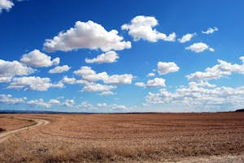

Een wolk is een verzameling uiterst kleine waterdruppeltjes, ijskristallen of een mengsel van beide. Wolken veranderen voortdurend onder invloed van luchtstromingen en natuurkundige processen.
Wolken veranderen voortdurend onder invloed van luchtstromingen en natuurkundige processen. Bron: knmi.nl